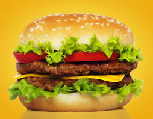

Burger

A classic burger typically features a grilled ground beef patty nestled between two halves of a soft, round bun.
Burgers can be prepared on a grill or stovetop, ensuring the patty is cooked thoroughly and safely, usually to an internal temperature of 160°F (71°C).
the perfect burger is a matter of personal preference, offering endless possibilities for customization and regional variations.
Ingredients
- 1 ½ pounds ground beef (preferably 80% lean, 20% fat)
- 4 hamburger buns
- Toppings: lettuce, sliced tomatoes, onions, pickles, cheese slices (optional)
- Condiments: ketchup, mustard, mayonnaise (or your preferred sauces)
Instructions
- Preheat grill to medium-high heat.
- Divide ground beef into four portions and form into patties, making a small indentation in the center.
- Season with salt and pepper.
- Grill for 4-5 minutes per side until done.
- Add cheese during the last minute if desired.
- Toast the bunes.
- Assemble with your preferred toppings and condiments.
- Serve immediately.
Home page